We house external papers no longer available from NCEA,
start searching to find some.
Here to help? Check out our GitHub repo!
Or, if you're looking for the current version, head here.

⡴⠒⣄⠀⠀⠀⠀⠀⠀⠀⠀⠀⠀⠀⠀⠀⠀⠀⠀⠀⠀⠀⠀⠀⠀⠀⠀⠀⠀⠀⠀⠀⠀⠀⠀⣼⠉⠳⡆⠀ ⣇⠰⠉⢙⡄⠀⠀⣴⠖⢦⠀⠀⠀⠀⠀⠀⠀⠀⠀⠀⠀⠀⠀⠀⠀⠀⠀⠀⠀⠀⠀⠀⠀⠀⠀⠘⣆⠁⠙⡆ ⠘⡇⢠⠞⠉⠙⣾⠃⢀⡼⠀⠀⠀⠀⠀⠀⠀⢀⣼⡀⠄⢷⣄⣀⠀⠀⠀⠀⠀⠀⠀⠰⠒⠲⡄⠀⣏⣆⣀⡍ ⠀⢠⡏⠀⡤⠒⠃⠀⡜⠀⠀⠀⠀⠀⢀⣴⠾⠛⡁⠀⠀⢀⣈⡉⠙⠳⣤⡀⠀⠀⠀⠘⣆⠀⣇⡼⢋⠀⠀⢱ ⠀⠘⣇⠀⠀⠀⠀⠀⡇⠀⠀⠀⠀⡴⢋⡣⠊⡩⠋⠀⠀⠀⠣⡉⠲⣄⠀⠙⢆⠀⠀⠀⣸⠀⢉⠀⢀⠿⠀⢸ ⠀⠀⠸⡄⠀⠈⢳⣄⡇⠀⠀⢀⡞⠀⠈⠀⢀⣴⣾⣿⣿⣿⣿⣦⡀⠀⠀⠀⠈⢧⠀⠀⢳⣰⠁⠀⠀⠀⣠⠃ ⠀⠀⠀⠘⢄⣀⣸⠃⠀⠀⠀⡸⠀⠀⠀⢠⣿⣿⣿⣿⣿⣿⣿⣿⣿⣆⠀⠀⠀⠈⣇⠀⠀⠙⢄⣀⠤⠚⠁⠀ ⠀⠀⠀⠀⠀⠀⠀⠀⠀⠀⠀⡇⠀⠀⢠⣿⣿⣿⣿⣿⣿⣿⣿⣿⣿⣿⡄⠀⠀⠀⢹⠀⠀⠀⠀⠀⠀⠀⠀⠀ ⠀⠀⠀⠀⠀⠀⠀⠀⠀⠀⠀⡀⠀⠀⣿⣿⣿⣿⣿⣿⣿⣿⣿⣿⣿⣿⣿⡀⠀⠀⢘⠀⠀⠀⠀⠀⠀⠀⠀⠀ ⠀⠀⠀⠀⠀⠀⠀⠀⠀⠀⠀⡇⠀⢰⣿⣿⣿⡿⠛⠁⠀⠉⠛⢿⣿⣿⣿⣧⠀⠀⣼⠀⠀⠀⠀⠀⠀⠀⠀⠀ ⠀⠀⠀⠀⠀⠀⠀⠀⠀⠀⠀⢠⡀⣸⣿⣿⠟⠀⠀⠀⠀⠀⠀⠀⢻⣿⣿⣿⡀⢀⠇⠀⠀⠀⠀⠀⠀⠀⠀⠀ ⠀⠀⠀⠀⠀⠀⠀⠀⠀⠀⠀⠘⡇⠹⠿⠋⠀⠀⠀⠀⠀⠀⠀⠀⠀⠙⢿⡿⠁⡏⠀⠀⠀⠀⠀⠀⠀⠀⠀⠀ ⠀⠀⠀⠀⠀⠀⠀⠀⠀⠀⠀⠀⠻⣤⣞⠁⠀⠀⠀⠀⠀⠀⠀⠀⠀⠀⢢⣀⣠⠇⠀⠀⠀⠀⠀⠀⠀⠀⠀⠀ ⠀⠀⠀⠀⠀⠀⠀⠀⠀⠀⠀⠀⠀⠀⠀⠙⠲⢤⣀⣀⠀⢀⣀⣀⠤⠒⠉⠀⠀⠀⠀⠀⠀⠀⠀⠀⠀⠀⠀⠀
We couldn't find anything! Perhaps you've made a typo, or the paper doesn't exist? Remember, we only have externals!
Joel Batchelar,
Yanxuan Weng, and
Fionn Cassidy
from Nayland College,
with a little help from Mitar Nikolic (from Germany)
and more through GitHub!
We're just a few students who made something pretty cool.
Let us know what you thought!
Our Exams uses Lunr for searching.
Lunr is copyrighted by Oliver
Nightingale under the
MIT License.